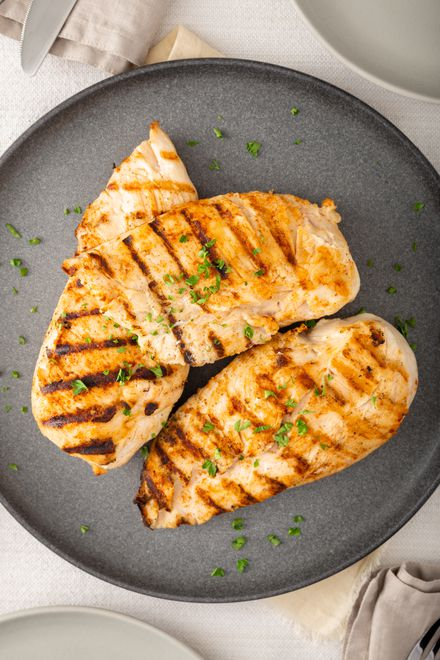

Spicy Grilled Chicken

Spicy grilled chicken freshly cooked
Ingredients:
(using Sysco seasonings)
- Two 5oz Chicken Breasts(trimmed)
- 10oz Ghost Pepper Chile Blend
- 3oz Garlic Salt
- 3oz Cajun or Blackening Seasoning
- 5oz Pepper Supreme(substitute 5oz salt/pepper blend)
- 2oz Red Pepper Flakes
Seasoning the Chicken
- First, if untrimmed, trim off skin and tendon from chicken breast
- Grab a tupperware container and put chicken in
- Pour 4 cups of Extra Virgin Olive Oil on top of chicken
- Measure out each dry seasoning and add to chicken in tupperware container
- Rub the seasoning on the chicken to ensure chicken is entirely covered
- Let sit in refrigerator covered for 30 minutes
Cooking Instructions:
(on grill)
- Preheat grill to 450 degrees
- Remove chicken from refrigerator
- Pat up any extra seasoning with chicken for maximum flavor
- Lay onto cooking surface for 4 minutes and rotate 90 degrees for 3 minutes to get perfect char marks
- Flip after 7 minutes and repeat step 4
- Check internal temp is 165 degrees before serving
At this point, your Spicy Grilled Chicken is ready to be served, along with your favorite side dishes. This will make
this entree a fulfilling and nutritional meal leaving you craving more.